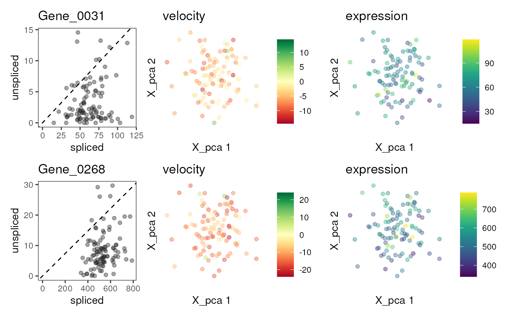
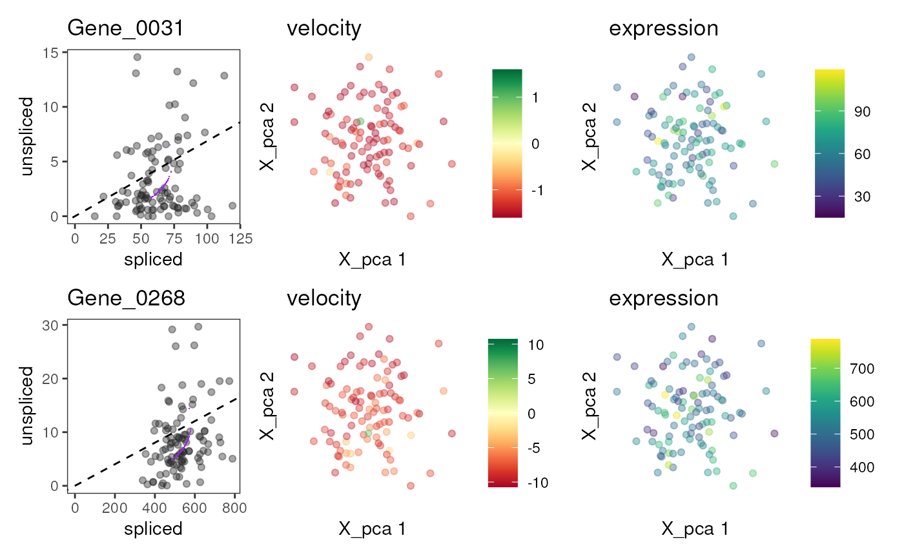

For a each gene in a set of genes, show the phase graph (spliced versus unspliced counts and fitted model) and reduced dimension graphs with cell colored by velocity and (spliced) expression.
Usage
plotVelocity(
x,
genes,
use.dimred = 1,
assay.splicedM = "Ms",
assay.unsplicedM = "Mu",
which.plots = c("phase", "velocity", "expression"),
genes.per.row = 1,
color_by = "#222222",
color.alpha = 0.4,
colors.velocity = c("#A50026", "#D73027", "#F46D43", "#FDAE61", "#FEE08B", "#FFFFBF",
"#D9EF8B", "#A6D96A", "#66BD63", "#1A9850", "#006837"),
colors.expression = c("#440154", "#482576", "#414487", "#35608D", "#2A788E", "#21908C",
"#22A884", "#43BF71", "#7AD151", "#BBDF27", "#FDE725"),
max.abs.velo = 0.001
)Arguments
- x
A SingleCellExperiment object with RNA velocity results as returned by
scvelo, and low-dimensional coordinates, e.g., after t-SNE, in itsreducedDims.- genes
A character vector with one or several genes for which to plot phase and velocity graphs.
geneshave to be inrownames(x).- use.dimred
String or integer scalar specifying the reduced dimensions to retrieve from
x.- assay.splicedM
An integer scalar or string specifying the assay of
xcontaining the moments of spliced abundances.- assay.unsplicedM
An integer scalar or string specifying the assay of
xcontaining the moments unspliced abundances.- which.plots
A character vector specifying which plots to create for each gene. Possible values are
"phase", "velocity", "expression"and correspond to the phase graph or reduced dimension graphs with cells colored by velocity or (spliced) expression.- genes.per.row
An integer scalar with the numbers of genes to visualize per row of plots. For example, if
which.plots = c("phase","expression")andgenes.per.row = 2, the resulting figure will have four plot panels per row.- color_by
A character scalar specifying a column in
colData(x)to color cells in the phase graph. Alternatively,color_bycan be set to vector of valid R colors, either of length one (recycled for all cells) or of lengthncol(x), which will then be used to color cells in the phase graph.- color.alpha
An integer scalar giving the transparency of colored cells. Possible values are between 0 (fully transparent) and 1.0 (opaque).
- colors.velocity, colors.expression
Character vectors specifying the color ranges used for mapping velocities and expression values. The defaults are
RColorBrewer::brewer.pal(11, "RdYlGn")for the velocities andviridisLite::viridis(11)for the expression values.- max.abs.velo
A numeric scalar greater than zero giving the maximum absolute velocity to limit the color scale for the
"velocity"graph.
Value
A patchwork object with the plots selected by which.plot for
the genes in genes, arranged in a grid according to genes.per.row.
Details
Please note that plotVelocity will modify parameters of
the current graphics device using layout and par,
in order to create the layout for the generated graph panels.
See also
scvelo, to generate x,
brewer.pal and viridis
for creation of color palettes, packages ggplot2 and patchwork
used to generate and arrange the plots.
Examples
library(scuttle)
set.seed(42)
sce1 <- mockSCE(ncells = 100, ngenes = 500)
sce2 <- mockSCE(ncells = 100, ngenes = 500)
datlist <- list(X=counts(sce1), spliced=counts(sce1), unspliced=counts(sce2))
out1 <- scvelo(datlist, mode = "steady_state")
out2 <- scvelo(datlist, mode = "dynamical")
plotVelocity(out1, c("Gene_0031","Gene_0268"))

plotVelocity(out2, c("Gene_0031","Gene_0268"))
